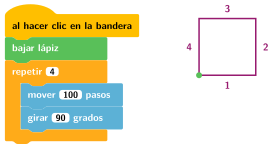
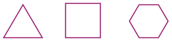

Repetir un número de veces
🤔 Pienso5 min
Qué hago aquí: Piensa un momento y contesta con lo que ya sabes. No pasa nada si no lo sabes: es para empezar.
Añade la extensión Lápiz (botón de abajo a la izquierda). Haz que el gato dibuje un cuadrado con bajar lápiz, mover 100 pasos y girar 90 grados. ¿Cuántos bloques usas?
📖 Leo y aprendo15 min
Qué hago aquí: Lee despacio, mira los dibujos y los ejemplos, y quédate con la idea clave del final.
En el cuadrado repites cuatro veces lo mismo: mover y girar. Para no repetir bloques se usa un bucle.

Para un polígono regular de n lados: repetir n veces y girar 360 : n grados.

| triángulo | cuadrado | pentágono | hexágono | |
| repetir | 3 | 4 | 5 | 6 |
| girar | 120° | 90° | 72° | 60° |
El giro es siempre 360 : lados.
✏️ Hago25 min
Qué hago aquí: Haz las actividades en orden. Empieza siempre por las básicas.
Monta el programa del cuadrado con el bucle. Marca cuando funcione:
Completa la tabla y dibuja cada polígono en Scratch.
| Polígono | Veces que repite | Grados que gira |
|---|---|---|
| Triángulo | 3 | |
| Pentágono | 72 | |
| Octógono |
En Code.org, escribe con un bucle: avanzar, avanzar, avanzar, avanzar, avanzar.
Dibuja una escalera de 5 peldaños con un bucle. Escribe o dibuja los bloques.
✏️ Puedes responder escribiendo, con un dibujo o un esquema, o contándolo en voz alta.
🚀 Amplío (si quieres saber más)
Qué hago aquí: ¿Has terminado? Lee la curiosidad o elige el reto. Es voluntario.
Mete el bucle de un hexágono dentro de otro bucle que repita 12 veces y gire 30 grados cada vez. ¿Qué figura sale?
✅ Compruebo5 min
Qué hago aquí: Contesta sin mirar la ficha y marca cómo lo llevas.